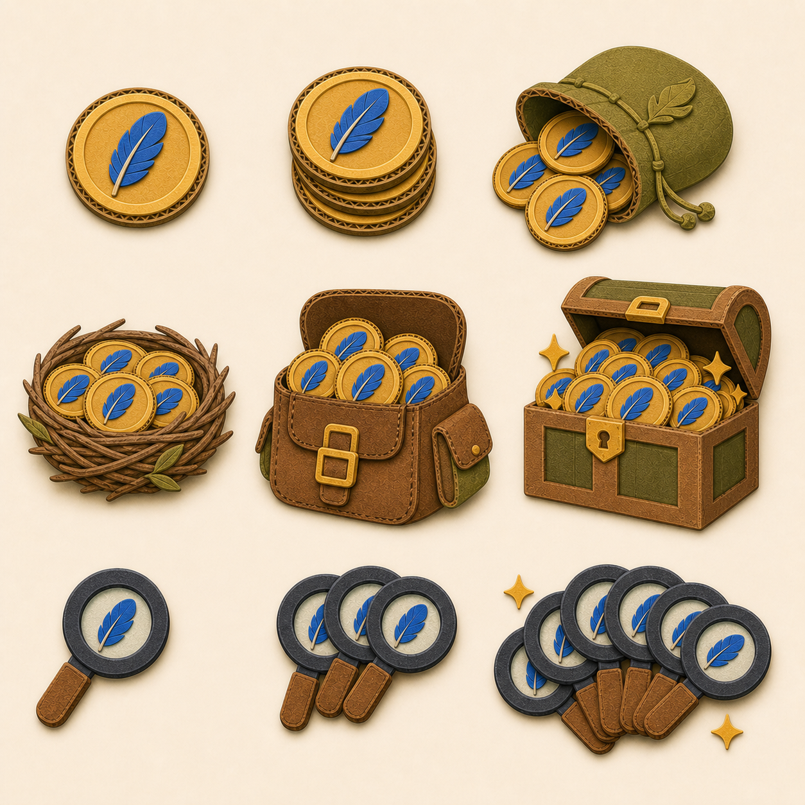

Find the Bird · asset batch 5 of 6
Shop currency packs
Six feather-coin tiers grow from one token to an overflowing explorer chest. Three hint tiers grow from one magnifier to a five-piece bundle.

Grid order
Coin 1
Coin 2
Coin 3
Coin 4
Coin 5
Coin 6
Hint small
Hint medium
Hint large
Approval gate
- All six coin tiers increase clearly without prices or numbers.
- Feather medallions consistently replace paw currency.
- Hint tiers read as one, three, and five magnifiers.
- The two product families remain distinguishable at shop-card size.